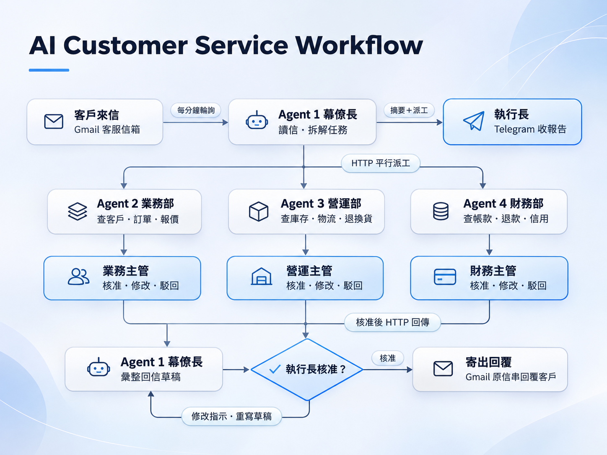
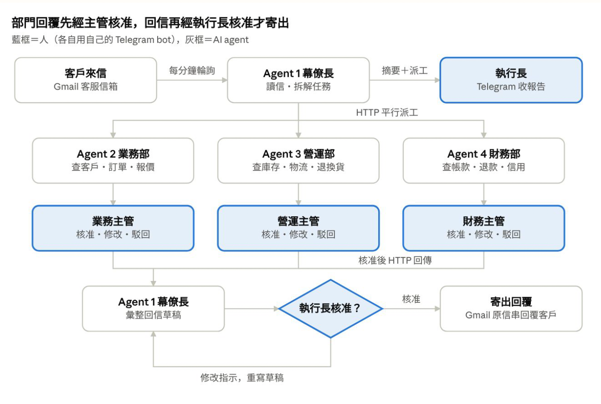

P05 / Hackathon-style course prototype
Multi-Agent HITL Support System
In a hackathon-style course project, supported CEO-side integration across Telegram, Google Apps Script, and Gmail to simulate AI task routing and human approval for customer support.

Multi-Agent HITL Support System | Cover
01
The problem
A customer email may involve orders, logistics, and refunds, requiring information from several departments. Using the fictional SunLight Home company, the team designed a workflow in which AI routes tasks, departments check information, and people approve replies.
02
My contribution
I was responsible for the CEO-side role, helping connect a Telegram bot, integrate Google Apps Script with Gmail, support deployment, and run system simulations. Other department agents and their data were handled through team responsibilities.
03
The workflow
Agent 1 reads support emails and delegates tasks to the relevant department agents. Department managers approve, revise, or reject drafts in Telegram before the CEO-side agent consolidates the response. The final email requires executive approval. The case demonstrates workflow and service integration rather than training a proprietary large model.
04
Outcomes
The team produced an architecture, simulated data, and a workflow demonstration showing cross-department queries and two stages of human review. The presentation’s 34 customers, 122 orders, and 18 products describe simulated data, not commercial adoption. Timeout handling and exceptions must be distinguished as designed, implemented, or tested; this review checks the presentation evidence only.
SELECTED EVIDENCE
Selected slides & demo gallery

